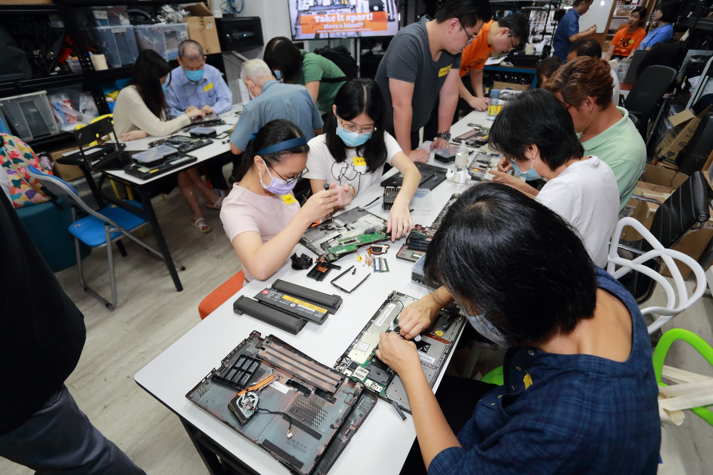

Reducing e-waste in Singapore
Have you ever wondered where retired electronics go? Turns out, they’re not sunbathing on a tropical island.
Singapore’s high-tech hustle comes with a catch—e-waste. Our island churns around 60,000 tonnes of e-waste a year. To put it into perspective, that’s roughly 70 discarded mobile phones per person in Singapore *insert shocked Pikachu face*.
This digital junkyard isn’t just an eyesore; it’s a ticking eco-bomb. Unwanted electronics contain sneaky toxins that can escape and wreak havoc on our environment. But fret not! We’ve got a bag of tricks to help you scale down your e-waste impact.

1. Resist the Shiny Temptation
Before you say R.I.P to your gadget in pursuit of the latest model, pause and ponder. Do you truly need that upgraded screen? Extending the lifespan of your devices reduces the demand for new ones and effectively cuts down on e-waste in Singapore.
2. DIY Repair
Got a smartphone sulking in a corner or a laptop giving you the silent treatment? Instead of waving the white flag, give DIY repair a shot. Not only will you save some bucks, but you’ll also prevent your devices from joining the waste parade.
3. Donate or Sell (Don’t Dump)
Sure, your old tablet might not be the talk of the town, but it could be someone else’s treasure. Consider the power of donation or selling your preloved electronics to grant them a new lease on life.
4. Recycle E-waste Responsibly
When it’s time to part ways with your gadget, recycle it responsibly. Many electronic stores and manufacturers in Singapore offer recycling programs that give your devices a new lease on life.
Save this map for recycling points in Singapore.
5. Mindful Upgrades
If you decide to take the upgrade leap, do it with intention. Seek out eco-friendly products known for their durability. Investing in quality or extending the warranty on your devices means less electronic waste in the long run.
6. Battery Banishment from Landfills
Batteries aren’t just unwanted guests at the landfill party—they’re the ones causing trouble. Make sure to recycle them properly. Better yet, consider using rechargeable batteries that might help you save money too.
7. Join the Repair Movement
If you can’t fix it, we can do it! Backing organisations like Engineering Good (EG) – a local non-profit empowering vulnerable and low-income communities with technology – is a power move.
If employees want to buy back decommissioned/retired work laptops for personal use, read more about our corporate Buyback programme.

These tips aren’t just about shrinking e-waste. They are your ticket to giving our Lion City a good tidying up. It’s time to outwit technotrash and transform Singapore into a cleaner, greener paradise. 🌱🔌